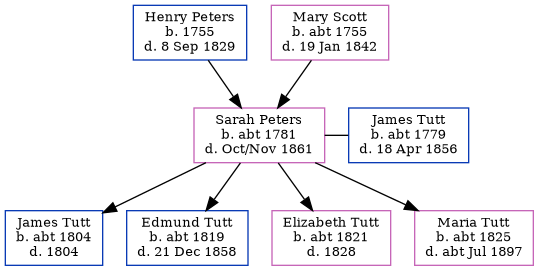

Sarah Tutt (née Peters) c1781 - 1861
[ Home ] | [ Calendar ] | [ Surnames Index ] | [ Errors ] | [ Family History ]A nurse and the child of Henry Peters and Mary Scott, Sarah Peters, the 3 times great-grandmother of Nigel Horne, was born in Folkestone, Kent, England c. 17811,2,3, was baptised there at Parish Church of St Mary & St Eanswythe on 14 Apr 1782 and also married James Tutt (a farm bailiff with whom she had 4 children: James, Edmund, Elizabeth and Maria) there on 3 Oct 18015.
During her life, she was living in Cheriton, Kent, England on 6 Jun 18411; at 5 Shortlands Farm, Beckenham, Kent on 30 Mar 18517; and at Horn Street in Cheriton on 7 Apr 18613, when she was living with her daughter Maria, following the death of her husband on 18 Apr 1856.
She died in Oct/Nov 1861 in Cheriton4 and was buried there on 10 Nov 18616.
Parents
- Henry was born in 1755
- Mary was born c. 1755
Children
- James was born c. 1804
- Edmund was born c. 1819
- Elizabeth was born c. 1821
- Maria was born c. 1825
Citations
- 1841 England Census Online publication - Provo, UT, USA: The Generations Network, Inc., 2006.Original data - Census Returns of England and Wales, 1841. Kew, Surrey, England: The National Archives of the UK (TNA): Public Record Office (PRO), 1841. Data imaged from the National
- 1851 England Census Online publication - Provo, UT, USA: The Generations Network, Inc., 2005.Original data - Census Returns of England and Wales, 1851. Kew, Surrey, England: The National Archives of the UK (TNA): Public Record Office (PRO), 1851. Data imaged from the National
- 1861 England Census Online publication - Provo, UT, USA: The Generations Network, Inc., 2005.Original data - Census Returns of England and Wales, 1861. Kew, Surrey, England: The National Archives of the UK (TNA): Public Record Office (PRO), 1861. Data imaged from the National
- England & Wales, FreeBMD Death Index: 1837-1915 Online publication - Provo, UT, USA: The Generations Network, Inc., 2006.Original data - General Register Office. England and Wales Civil Registration Indexes. London, England: General Register Office. © Crown copyright. Published by permission of the Cont
- England, Select Marriages, 1538–1973 Ancestry.com Operations, Inc.
- Familysearch.org (www.familysearch.org)
- 1851 England, Wales & Scotland Census - Findmypast (was age 69 and the wife of the head of the household)
- 1861 England, Wales & Scotland Census - Findmypast (was age 79 and the mother in law of the head of the household)
Media
1861 England, Wales & Scotland Census Transcription - GBC-1861-0003628539
1851 England, Wales & Scotland Census Transcription - GBC-1851-0005481612
1851 England, Wales & Scotland Census - GBC/1851/0005481613
Family Tree
Map
Generated by ged2site. Last updated on Jul 3, 2024